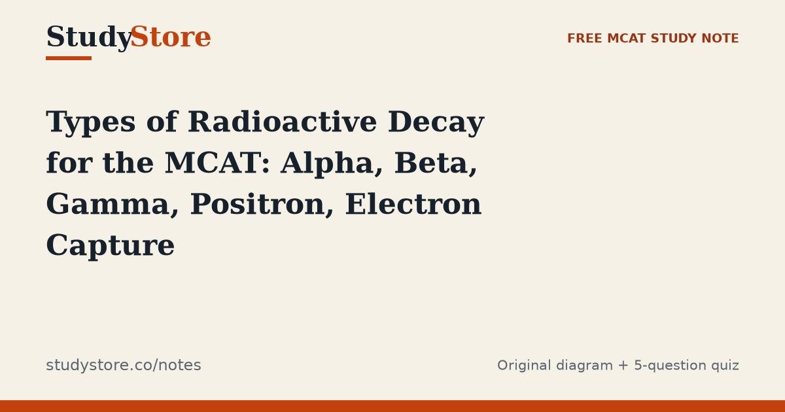
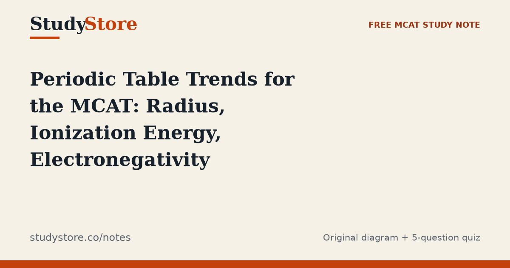
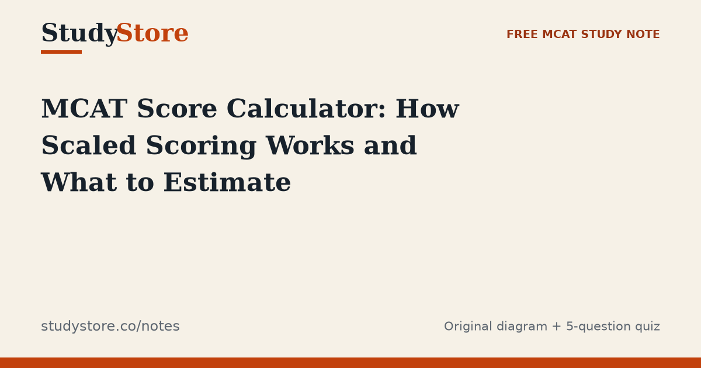
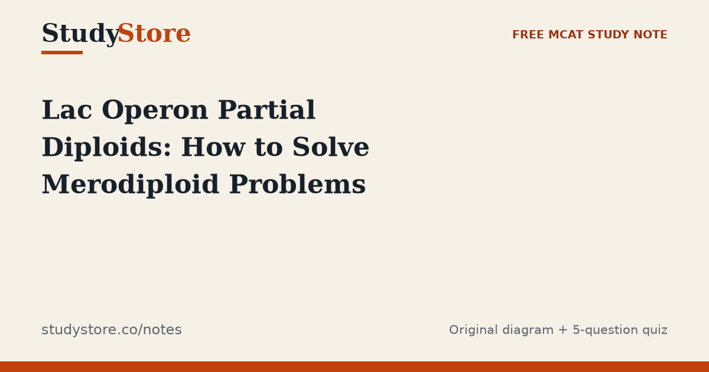
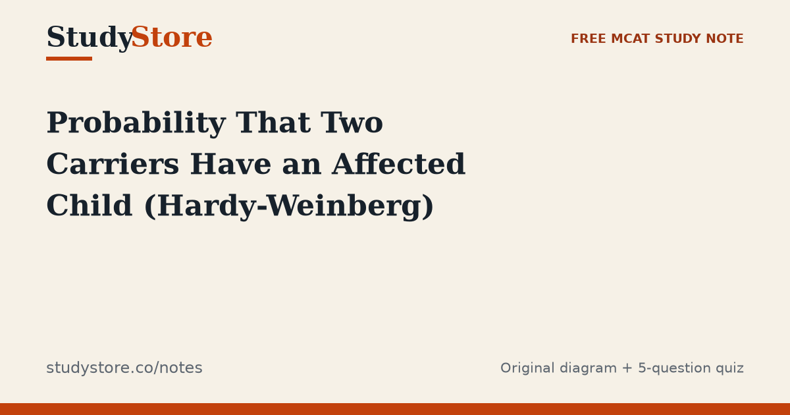
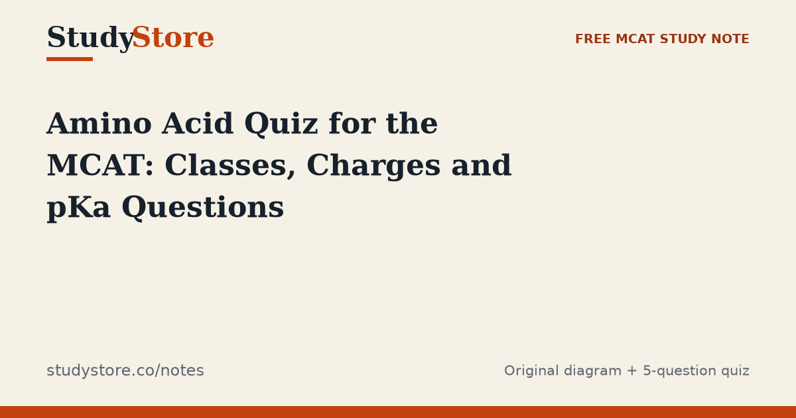
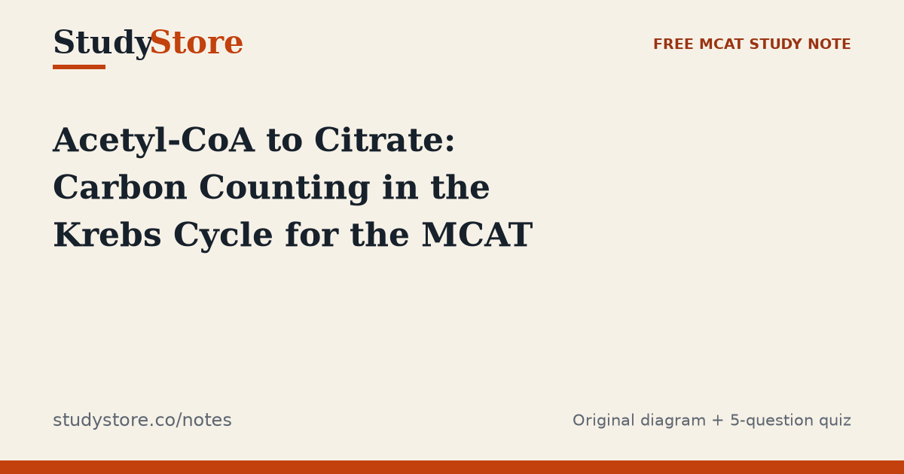

How each decay type changes mass number and atomic number, with the equations, particle properties and penetrating power the MCAT expects you to know.

The periodic trends the MCAT tests, with the reason behind each: atomic radius, ionization energy, electron affinity and electronegativity, plus the exceptions and how to use them in passages.

The Nernst equation for equilibrium potential, the shortcut form at body temperature, worked K+ and Na+ examples, and how it differs from the resting potential.

How the MCAT is scored, from raw correct answers to a 118 to 132 section score and a 472 to 528 total, and how to use a calculator to set a target without fooling yourself.

A step-by-step method for lac operon partial diploid (merodiploid) questions: which mutations act in cis, which act in trans, and what each genotype does with and without lactose.

Five glycolysis questions in MCAT style, covering net ATP, the committed step, regulation, fermentation and what happens with no oxygen, each with a short worked answer.
What the fertility transition and the migration transition models say, how they connect to the demographic transition stages, and how push and pull factors fit in.

Worked method for the classic question: a recessive disorder affects 1 in N births, two unrelated people pick each other, what is the chance of an affected child? Includes the full calculation.

A self-test on the 20 amino acids as the MCAT uses them: side-chain classes, charge at physiological pH, special residues and pKa reasoning, with answers.

How many carbons citrate has, how acetyl-CoA enters the citric acid cycle, where the two CO2 leave, and how many acetyl-CoA enter per glucose.

Learn how bottom-up and top-down processing differ, how they combine in perception, and how to label MCAT-style scenarios without falling for common traps.

How the psychoanalytic, humanistic, trait, behaviorist, social cognitive and biological views explain personality, and how to tell them apart fast.

How to use Anki for the MCAT: what to put on cards, how many new cards to add, and how to pair flashcards with practice passages.

Classify any pair of stereoisomers as enantiomers, diastereomers, meso or identical, and see why only diastereomers separate by ordinary methods.

How transformation, transduction and conjugation move DNA between bacteria, how to tell them apart in an experiment, and the traps that cost points.

There is no official MCAT study duration. Learn how to size your own timeline from a diagnostic, a gap list, and a test date you plan backward from.

The four constant-acceleration kinematics equations, how to pick one by the variable you lack, and worked braking, free fall and projectile examples.

What the equivalence point is, how it differs from the end point, how to find the second equivalence point of a polyprotic acid, and what trial 1 of a titration is for.

Learn when to use W = Fd cos θ, the work-energy theorem, and conservation of mechanical energy, with worked examples on friction, springs and power.

Vertical vs horizontal, intergenerational vs intragenerational, structural vs exchange mobility, plus caste and class systems, with a worked mobility table.

How sensory, short-term, working and long-term memory differ in capacity and duration, plus explicit vs implicit memory and the brain areas behind each.

Solve any lens or mirror problem with 1/f = 1/do + 1/di and m = -di/do, using one sign convention, an image table and four worked examples.

Compare the James-Lange, Cannon-Bard, Schachter-Singer and Lazarus theories of emotion by sequence, evidence and critiques, with practice scenarios.

Learn absolute and difference thresholds, apply Weber's law, and separate sensitivity (d') from response bias in signal detection theory, with worked numbers.

Role strain vs role conflict, ascribed, achieved and master status, and primary, secondary, in-groups and reference groups, with worked examples.

What recombination frequency is, how to calculate it and convert it to map units (cM) for gene mapping, with worked examples and the 50 percent limit.

Find reaction orders, the rate law, and k from an initial rates table, with ratio and log shortcuts, k units by order, and worked MCAT-style examples.

Balance alpha, beta and gamma decay equations, then solve half-life problems for fraction left, elapsed time and activity, with worked examples.

A step-by-step method to rank groups by CIP priority and assign R or S from wedge-dash drawings and Fischer projections, with tie-breaker practice.

The four levels of protein structure, the bonds that hold each level together, and how heat, pH, urea, and SDS unfold proteins, written for the MCAT.

Piaget's four stages with ages, milestones and limits, plus schemas, assimilation and accommodation, the classic tasks, and how to place a vignette.

Sort simple diffusion, facilitated diffusion, primary and secondary active transport by energy source, direction and kinetics, with a worked sodium-glucose example.

Read the oxygen-hemoglobin dissociation curve: why it is sigmoidal, what P50 means, what shifts it right or left, and how shifts change unloading.

Follow filtrate through the nephron segment by segment, see how the loop of Henle and ADH set urine concentration, and work GFR and clearance math.

Compare mitosis and meiosis stage by stage, track chromosome, chromatid and DNA counts through each division, and see how nondisjunction causes aneuploidy.

What Km, Vmax, and kcat mean, how to read a Michaelis-Menten curve, and how to pull the numbers out of a Lineweaver-Burk plot, with a worked example.

How the lac repressor and CAP-cAMP combine to set lac operon output, a four-condition table, mutant and partial diploid logic, and the traps that cost points.

Read IR peaks and 1H NMR shift, integration and splitting step by step, then combine them with degrees of unsaturation to solve a structure.

A repeatable way to read a CARS passage: map each paragraph's job, name the main idea, predict before reading choices, and eliminate wrong answers by trap.

Derive the Henderson-Hasselbalch equation, then use it for buffers, the bicarbonate system in blood, amino acids, and drug ionization, with worked examples.

Solve Hardy-Weinberg problems from any starting point: recessive or dominant phenotypes, genotype counts, carriers, X-linked traits, and equilibrium tests.

The ten steps of glycolysis grouped into investment and payoff, the three regulated enzymes, a step-by-step ATP and NADH ledger, and trap questions.

Use delta G = delta H - T delta S to predict spontaneity, find the crossover temperature, and link delta G to K and Q, with worked numbers.

Compare galvanic and electrolytic cells by spontaneity, electrode signs, electron flow, and sign of E and delta G, with worked Nernst and Faraday examples.

Self-serving bias vs fundamental attribution error vs actor-observer bias: the difference in one table, with examples and Kelley's covariation model.

How to tell functionalism, conflict theory and symbolic interactionism apart by level of analysis and core question, with one scenario seen through all three.

All eight of Erikson's psychosocial stages with ages, crises and virtues, how to match a vignette to a stage, and how Erikson differs from Freud.

A side-by-side guide to the four reversible inhibition types, how each changes Km and Vmax, and how to recognize them on a Lineweaver-Burk plot.

Learn the seven EC enzyme classes, what reaction each catalyzes, the naming clues that give them away, and the exceptions that fool test takers.

How the DSM-5 groups psychological disorders, what separates look-alike diagnoses, and the duration rules that decide most diagnosis questions.

What happens to birth rates, death rates and population growth in each stage of the demographic transition model, with growth-rate and doubling-time math.

The difference between conformity and obedience, what the Asch and Milgram studies found, and which factors push each rate up or down.

Calculate freezing point depression, boiling point elevation, vapor pressure lowering and osmotic pressure, with the van't Hoff factor and worked examples.

The core difference between classical and operant conditioning, the four reinforcement and punishment cells, and the four reinforcement schedules.

Walk the eight citric acid cycle steps, the products of each turn, the three regulated enzymes, and how to count ATP from acetyl-CoA to glucose.

Use the continuity equation and Bernoulli's equation to find flow speed and pressure in a pipe, with worked Venturi, height and Torricelli examples.

Learn how bacteria and viruses differ in size, structure, genome, replication and drug targets, why antibiotics fail on viruses, and the exceptions that test you.

Tell epimers, anomers, enantiomers and other sugar isomers apart using Fischer and Haworth drawings, with a pair-sorting drill and a mutarotation calculation.

How to predict the charge, pI, and titration behavior of any amino acid for the MCAT, with the side chain pKa values worth memorizing.

Walk through each action potential phase, which voltage-gated channel opens or closes, why refractory periods exist, and how Nernst potentials set the limits.

What the equivalence point is and how to find it on any acid-base titration curve, plus the half-equivalence point, indicator choice and a worked example.
Free MCAT sampler
Free sample: MCAT cheat sheet (PDF)
Join the list and download a free sample from a paid pack: the 3-page Amino Acids, Proteins and Enzymes cheat sheet (PDF). We also email free MCAT notes and practice sets.
Free sampler, no signup needed: 61 study notes with original diagrams and 5-question quizzes, 80 practice sets (706 questions with full explanations) and the 2027 study schedule generator.